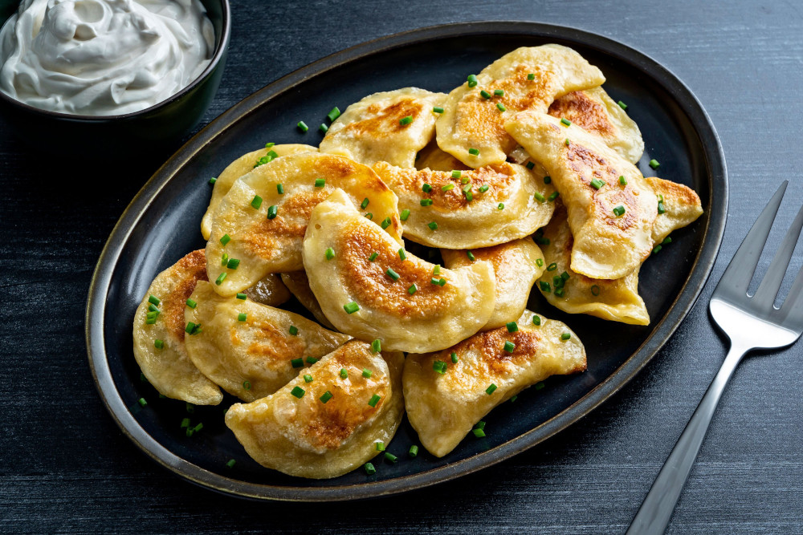

Homemade Pierogi

Pierogi, a classic and versatile eastern european dish
Pierogi are a flexible dish of boiled dumplings that can be stuffed with
various fillings including potatoes, cheese, sauerkraut, cabbage,
spiced meats, and even fruits and berries.
There are many versions of pierogi and ways that they can be served, but this recipe
is a traditional variation found in eastern Poland.
Ingredients
FOR THE DOUGH
- 300g (10 1/2 oz/ 2 1/2 cups) plain (all-purpose) flour
- 2 egg yolks
- 2 tablespoons melted unsalted butter
- large pinch of salt
- 100ml (3 1/2 fl oz/ 1/2 cup) warm water (from a boiled kettle)
FOR THE FILLING
- 2 onions
- 1 tablespoon salted butter
- 150g (5oz) twarog or other soft cheese
- 1 potato, peeled cooked and diced
- salt and white pepper to taste
Steps
- Make the dough by combining the flour with the egg yolks, melted butter, salt and
enough of the warm water to bring the mixture together in a medium bowl. Knead
the mixture until it is smooth, adding more water if you need it. Cover with a damp tea
towel and allow to rest for 20 minutes.
- Chop your onions very finely and fry them in butter. Combine the twarog (or soft cheese)
with half of the fried onions, diced cooked potato and season to taste with salt and pepper.
- Roll out your dough as thinly as possible on a floured surface, filling them with the potato
and cheese mixture. Have some water on standby to help you seal the edges if the dough is
a little bit too dry to stick together.
- Bring a large pan of salted water to a boil and carefully lower the pierogi into the
water. As soon as the pierogi float to the top, after 4-5 minutes, leave them to cook
for another 2-3 minutes. Remove from the pan with a slotted spoon and transfer to the
frying pan of buttery onions.
- Fry the pierogi for a minute or two, making sure they are all covered in the buttery onion
mixture. Serve immediately.